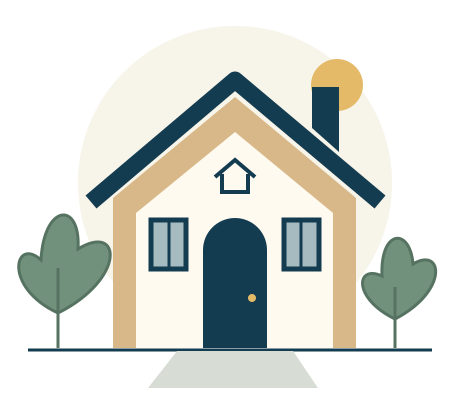

01
Essential repairs
Assistance focuses on necessary work and related expenses that help keep a home safe and functional.
A helping hand. A safer home.
Magen Habayit helps Jewish families cover essential home repairs and related expenses when they need a hand.
Help a family today
Our mission
A leaking pipe or a broken lock can become a big burden. We help with necessary repairs and related home expenses that keep a home safe and functional.
Assistance focuses on necessary work and related expenses that help keep a home safe and functional.
Magen Habayit pays 50% of eligible repair costs. The Jewish family pays the remaining 50%.
Assistance is available as long as funds are available in the nonprofit account. Donations help sustain this support.
A statement from our founder
Isaac
Founder of Magen Habayit
I began working in the trades in 2018, taking jobs with contractors and learning firsthand on job sites. Experienced tradespeople generously shared their knowledge with me, and I approached every opportunity with respect, gratitude, and a willingness to learn.
In 2019, I started my own business. As I grew in my work, I saw how quickly necessary home repairs could become a financial burden. Families could find themselves trying to budget for urgent repairs while keeping up with everyday expenses. No family should have to choose between repairing their home and putting food on the table.
That is why I founded Magen Habayit: to help Jewish families afford the essential repairs that keep their homes safe and functional. Currently serving families in Michigan, our goal is to make that support as straightforward and accessible as possible.
The generosity of others helped me build my career. Through Magen Habayit, I hope to pass that kindness on—giving families a helping hand when they need it most.
A family's experience
One family's experience with our founder, Isaac.
“Due to a serious leak in the kitchen that went down to the basement, and a moldy smell began to spread. In a house with children, this is an emergency. We called Isaac from Magen HaBayit and he contacted a licensed plumber, and in a short time they came to take care of the problem. It was much-needed help. Isaac is a champion at providing tools for any emergency.”
Your generosity helps make essential home repairs possible.
Support Magen Habayit